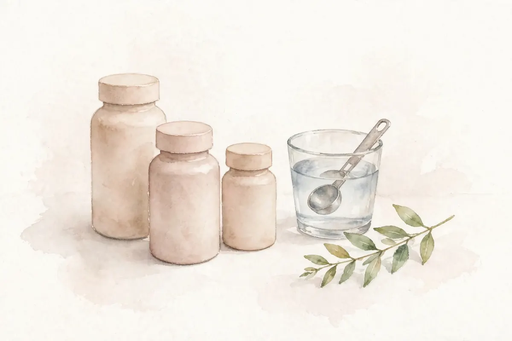

トップ ＞ インナーケア・サプリ ＞ サプリの表示単位の読み方：mg・μg・IUの前提を知る
サプリの表示単位の読み方：mg・μg・IUの前提を知る

サプリメントのパッケージを見ていると、数字の後ろに「mg」「μg」「IU」といった単位が並んでいます。同じ「500」という数字でも、単位がmgかμgかで、量は千倍違います。施術のお客様との会話でも「数字が大きいほど、たくさん入っているんですか」と聞かれることがあります。この記事では、特定の成分や商品の話ではなく、表示単位の前提を整理します。単位の読み方が分かると、商品同士の比較がぐっとしやすくなります。
mg・μg・gの関係
重さの単位は、g（グラム）を基準にして、mg（ミリグラム）はその千分の1、μg（マイクログラム）はさらにその千分の1です。つまり、1gは1000mg、1mgは1000μgになります。500mgと500μgでは、量は千倍違います。数字だけを見て比べると、単位の違いに気づきにくいので、数字の後ろの単位まで読む習慣が大事です。
パッケージの表示では、成分によって使う単位が違います。多く入っている成分はmgやgで、ごく少量の成分はμgで書かれていることがあります。これは量の大きさに合わせた書き分けで、単位が小さいからといって、その成分が軽んじられているわけではありません。量の単位は、あくまで「量のものさし」です。
IUという単位は、mgとは別のものさし
ビタミン類の表示でよく見かけるのが、IU（国際単位）という単位です。IUは重さの単位ではなく、成分の働きの量を表す単位で、成分ごとにmgへの換算が違います。たとえば、同じIUの数字でも、成分が違えばmgに換算した量は変わります。そのため、IUで書かれたものとmgで書かれたものを、数字だけで比べることはできません。
IUの表示がある商品では、パッケージの栄養成分表示や原材料名の欄に、mgに換算した量が併記されていることもあります。比べたいときは、同じ単位にそろえてから見るのが基本です。単位がそろわないまま数字だけを並べても、比較にはなりません。
「1日分あたり」か「1粒あたり」か
もうひとつ、見落としやすいのが「あたり」の部分です。「1日分（2粒）あたり500mg」と「1粒あたり500mg」では、1日にとる量は2倍違います。パッケージの含有量の表示は、1日分の目安量あたりで書かれていることが多いですが、商品によっては1粒あたり、100gあたりなど、基準が違います。
栄養成分表示も同じで、「1日分あたり」「100gあたり」など、基準が商品によって違います。商品同士を比べるときは、まずこの「あたり」をそろえてください。私は買い物のとき、まず表示の単位と「あたり」を確認してから、数字を見る順番にしています。数字の大小は、単位と基準がそろって初めて意味を持ちます。
単位の話は、栄養機能食品の表示にもつながります。栄養機能食品では、栄養成分の含有量が「1日分あたり」の表示で書かれていることが多く、単位もmgやμgで統一されています。表示の単位がそろっていると、ほかの商品と比べやすくなります。逆に、単位や「あたり」がバラバラな商品同士は、数字だけでは比べにくいものです。
買い物の現場では、同じ成分をうたう商品が何種類も並んでいます。私は、気になる成分の表示を2〜3商品で並べ、単位と「あたり」をそろえてから数字を見るようにしています。並べるときは、パッケージの裏面を横に並べるだけでも十分です。数字の大小は、単位と基準がそろって初めて意味を持ちます。数字だけを追いかけるのではなく、単位まで読む習慣が、表示を読む力になります。単位の読み方は、ほかの表示を読むときにも役立ちます。
セラフィナ「数字の後ろの単位まで読むのが、表示を読むコツだね。比べるときは『あたり』をそろえよう」

セラフィナ｜美容の道具箱の案内役
「量と表示が分かれば、美容は失敗しない。」——セラフィナと白猫のモコが、買う前のチェックポイントを案内します。綺麗になりたい気持ちに正直に、でも表示は冷静に読むのが、このサイトの約束です。